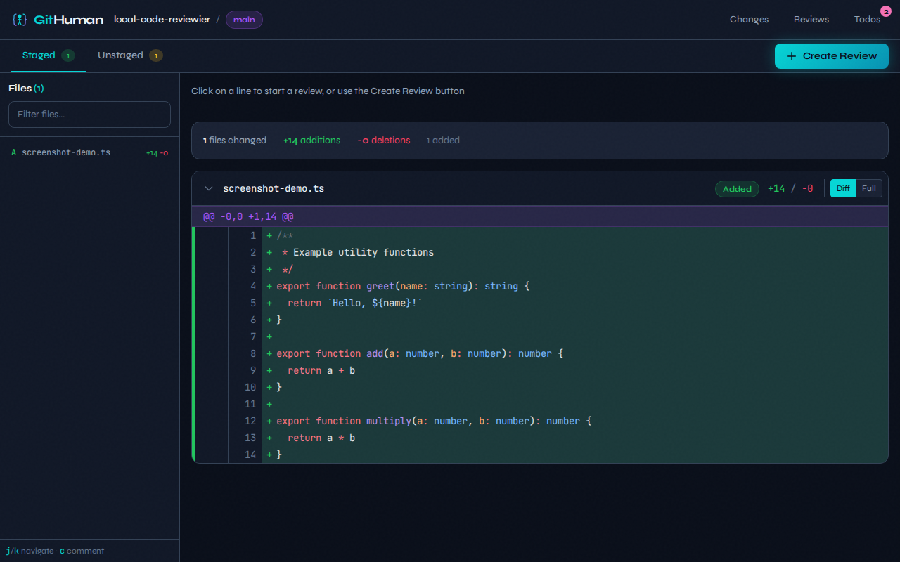

Review AI Code Before Commit
GitHub revolutionized how humans collaborate on code.
GitHuman defines how humans review code written by AI.
cd /your/repo && npx githuman serve
The Problem
AI coding agents write code. But the traditional PR workflow assumes humans are the authors. By the time AI-generated code reaches a pull request, you've already committed to the approach. Review happens too late.
The Solution
GitHuman moves the review checkpoint to where it belongs: the staging area. Before git commit, you get a proper review interface—not a wall of terminal diff output.
A GitHub-like interface for your staging area
Features
Visual Diff Review
Review staged changes in a clean, syntax-highlighted interface. No more squinting at terminal output.
Inline Comments
Add comments to specific lines with optional code suggestions. Track issues before they become commits.
Review Workflow
Track status: in progress, approved, or changes requested. Make informed decisions about AI output.
Todo Tracking
Create tasks for follow-up work via CLI or web interface. Keep track of what needs attention.
Markdown Export
Export reviews with comments for documentation. Keep a record of your review decisions.
Local & Private
Everything runs on your machine. No data leaves your computer. No accounts required.
Mobile Ready
Fully responsive interface. Review code on your phone or tablet when you're away from your desk.
Works beautifully on mobile
Review AI-generated code from anywhere. The interface adapts seamlessly to any screen size.
How It Works
AI agent makes changes
Claude, Copilot, Cursor, or any tool stages code changes
Run githuman serve
Opens the review interface in your browser
Review the diff
See exactly what changed, file by file, with syntax highlighting
Add comments & todos
Note issues, questions, or follow-up work
Decide
Approve and commit, or request changes from the agent